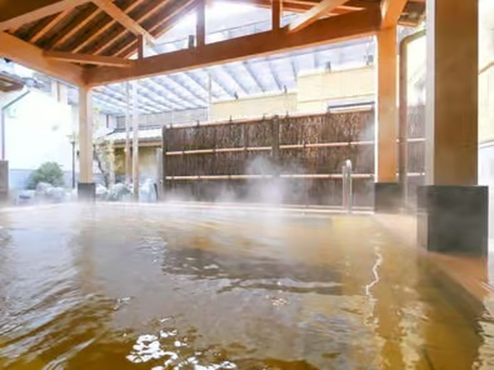

Tokyo's Late-Summer Heat Is Brutal. Here's the Local Cooldown Route
If you're reading this in late August or September, you already know. The temples are an endurance test. The subway platforms are a sauna before you even reach the train. Every guidebook photo of Senso-ji shows blue sky and cherry blossoms — nobody warns you that by week two of a Tokyo summer trip, most visitors are quietly rationing their outdoor time between convenience-store cold-brew stops and hotel air conditioning.
Locals don't fight the heat this way. We don't grit our teeth through it — we build the day around water. And the version I like best isn't a rooftop pool or a shopping mall food court. It's a slow walk along a spring-fed river, followed by a proper Japanese bath, thirty minutes from Ikebukuro in a suburb called Higashikurume.

Why a spring-fed river is the first move
The Kurome River runs a few degrees cooler than the concrete-lined rivers downtown, because it's fed by natural springs bubbling up through the Musashino plateau — a source respected enough to be named one of Japan's officially designated "meisui" waters. The path along it is shaded almost the entire way, which in August matters more than any temple roof. You feel the temperature drop the moment you step off the main road. It's not a dramatic cooldown, but it's the difference between a walk that drains you and one that resets you.
Then: the bath locals actually use for this
The destination is Spa Japon, one of the larger bath complexes in the Tokyo area, and in summer it runs a different rhythm than the rest of the year. The move isn't the hot bath — it's the contrast. A cold plunge after the heat outside hits like nothing else. The carbonated baths fizz against overheated skin in a way that's genuinely addictive. And the outdoor baths, timed for early evening once the sun has dropped, turn what was an unbearable afternoon into the most comfortable two hours of your entire trip.
This is not a novelty for locals — it's seasonal maintenance. Families here treat a bathhouse afternoon in August the way other cultures treat an afternoon nap: not exciting, just necessary. Tourists who try it usually leave asking why nobody told them about this sooner.
I had a guest in early September last year who'd spent four days convinced Tokyo summer was simply something to survive — he'd budgeted his whole trip around finding air conditioning. By the time we got to the outdoor bath at Spa Japon, cicadas going full volume in the trees overhead and steam rising into cooler evening air, he told me it was the first time all trip he'd actually wanted to be outside. That's the shift I'm looking for every time I run this route.
The timing that actually works
Skip the midday slot entirely — that's true of almost everything in Tokyo in summer, but especially here, since the whole point is contrast, not just proximity to water. We start the river walk in the mid-to-late afternoon, when the shade is at its best and the heat has just started to break, and time the bathhouse for early evening. You leave as the city is cooling down instead of walking back into the worst of it.
Do the whole route with a local
Ultimate Spa Japon Retreat & Kurome River Stroll — 2.5 hours, ¥9,000, rated 5.0 on GetYourGuide. Towels, timing and zero awkwardness included.
Check dates & book →Need an indoor break too?
For the hottest part of the day, guests often add the fully air-conditioned Studio Ghibli walking tour with museum entry, or browse other things to do in Tokyo for the rest of your stay.
Some links on this page are affiliate links — booking through them supports this site at no extra cost to you.